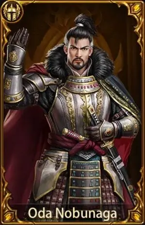

Oda Nobunaga: El Inicio de la Unificación

Oda Nobunaga fue el primer gran unificador de Japón. Destacó por su brillantez táctica y su falta de piedad hacia sus enemigos. Rompió de manera definitiva el poder político y militar de los monasterios budistas militantes, los cuales habían condicionado la política del país durante siglos.
Su mayor aportación al desarrollo técnico-militar fue la introducción masiva y organizada de las armas de fuego de avancarga (los arcabuces) en la célebre batalla de Nagashino (1775). Mediante formaciones rotativas de disparo, anuló por completo la temida caballería del clan Takeda.
Su lema personal, "Tenka Fubu", que se traduce como "El imperio bajo el dominio militar", rigió toda su campaña. Desafortunadamente, antes de ver su sueño consolidado, fue traicionado por uno de sus generales, Akechi Mitsuhide, en el incidente del templo Honnō-ji en 1582, donde fue obligado a cometer seppuku.
← Volver al Inicio